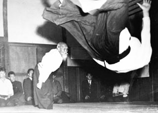

堀之内拳大の趣味一覧
合気道

上の画像に写る老人は植芝盛平という方で合気道の創始者です。私は小学生の頃に合気道と出会い、技を磨いてきました。皆さんのほとんどが合気道がどういうものか正確には分からないでしょう。合気道は言葉で説明するのは難しいですが同じ技でも毎日毎日で違う技に感じるほど奥が深く魅力的な武道です。体の脱力感が重要で本当に上手な方の技は隙が無く、不思議なほど立てないくらいまで追い込まれます。嘘に聞こえるかもしれませんが、洗練された技は芸術のように感じます。皆さんも是非合気道をしてみてはいかがでしょうか。